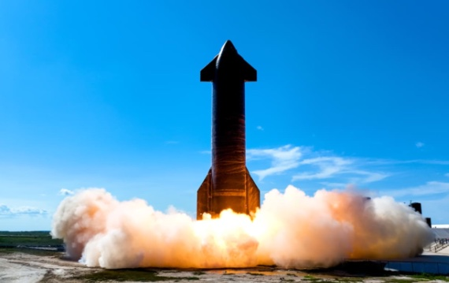

En 2022 se inauguró la reconquista de la Luna y, aunque el siguiente paso no llegará hasta 2024 con la misión Artemisa 2, en 2023 no faltará la acción en el espacio.

En la Luna seguiremos las evoluciones de la misión india Chandrayaan-3, de la japonesa HAKUTO-R Mission 1 y del rover Rashid de Emiratos Árabes Unidos, además de la pequeña
sonda Lunar Flashlight de la NASA, cuyo objetivo es estudiar el hielo lunar como futuro recurso.
Un destino mucho más lejano tendrá la sonda de la Agencia Europea del Espacio (ESA) Jupiter Icy Moons Explorer (JUICE), que se lanzará en abril y viajará durante ocho años
antes de entrar en la órbita de Ganímedes, la luna más grande de Júpiter y del Sistema Solar, para estudiar este y otros dos satélites jovianos (Calixto y Europa).
Este año la ESA lanzará también su telescopio espacial Euclid, destinado a estudiar la energía y materia oscuras. Y la NASA enviará una sonda al asteroide metálico Psyche y,
a cambio, regresará a la Tierra la OSIRIS-REx con muestras del asteroide 101955 Bennu. Además en 2023 seguirán sorprendiéndonos los hallazgos del telescopio espacial James Webb,
cuyos análisis de atmósferas de exoplanetas quizá sugieran firmas biológicas.
La gran nave Starship de Elon Musk y su compañía SpaceX tiene planificado su bautismo de fuego orbital para este año, lo mismo que la New Glenn de Jeff Bezos y su Blue Origin. Pero del éxito del
primer ensayo general de la Starship —que servirá a los futuros vuelos tripulados de la NASA— depende que se haga realidad la promesa del primer gran proyecto de turismo espacial, dearMoon,
de la mano del empresario japonés Yusaku Maezawa, quien en 2018 compró las nueve plazas para el primer viaje de la Starship a la órbita de la Luna (previsto entonces para 2023). Musk pretende
además posar este año una Starship no tripulada en la Luna.